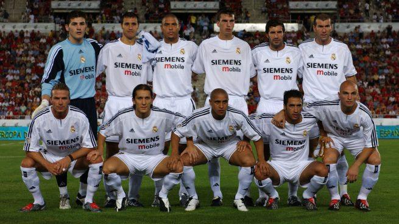
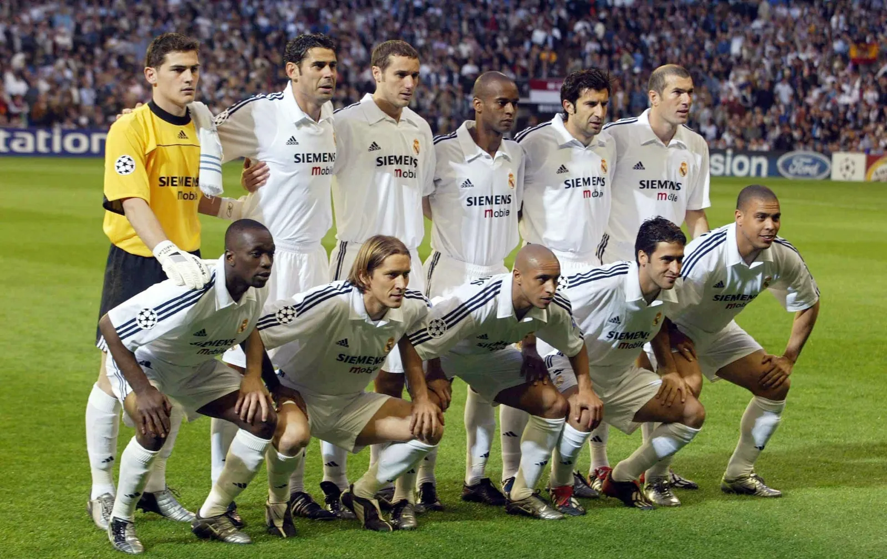

La etapa de Los Galácticos representa una de las épocas más reconocibles y mediáticas de la historia del Real Madrid. El proyecto comenzó a tomar forma a finales de la década de 1990 y alcanzó su mayor repercusión durante los primeros años del siglo XXI, especialmente bajo la presidencia de Florentino Pérez. La idea consistía en reunir en el mismo equipo a algunas de las mayores estrellas del fútbol mundial, combinando talento, prestigio y una enorme capacidad para atraer la atención de los aficionados.
La generación estuvo formada por figuras extraordinarias como Luís Figo, Zinedine Zidane, Ronaldo Nazário, David Beckham y Roberto Carlos, además de jugadores importantes que ya pertenecían al club, como Raúl González e Iker Casillas. Cada incorporación aumentaba la expectativa alrededor del equipo y convirtió al Real Madrid en uno de los clubes más observados del planeta. La presencia de tantas estrellas hizo que el término “Galácticos” pasara a identificar a aquella generación.
En el terreno deportivo, esta etapa consiguió importantes títulos. El Real Madrid conquistó la Champions League 1999-2000 y posteriormente volvió a ganar la competición en la temporada 2001-02. En esa final, disputada frente al Bayer Leverkusen, Zinedine Zidane marcó uno de los goles más recordados de la historia de la competición. Además, el equipo consiguió títulos de LaLiga, la Supercopa de España, la Supercopa de Europa y la Copa Intercontinental, consolidando su presencia tanto en España como en el escenario internacional.

Uno de los momentos más importantes de esta generación ocurrió en la temporada 2001-02, cuando el Real Madrid conquistó su novena Copa de Europa. El equipo dirigido por Vicente del Bosque superó distintas eliminatorias hasta alcanzar la final en Glasgow. Allí se enfrentó al Bayer Leverkusen y consiguió una victoria por 2-1. El espectacular gol de volea de Zidane se convirtió en la imagen de aquella conquista y quedó grabado como uno de los grandes momentos de la historia del Real Madrid.
Sin embargo, la historia de Los Galácticos también demuestra que reunir a grandes estrellas no garantiza dominar siempre el fútbol. A pesar de su enorme calidad individual y de sus títulos, el equipo atravesó momentos de irregularidad y no consiguió conquistar todos los trofeos que sus aficionados esperaban. La salida de algunos jugadores y los cambios en el proyecto marcaron el final de aquella etapa.
Lo que convirtió a Los Galácticos en una generación de culto no fueron únicamente sus títulos, sino el impacto que tuvieron dentro y fuera del campo. Figo, Zidane, Ronaldo, Beckham, Roberto Carlos y Raúl representaron una época en la que el Real Madrid combinó fútbol, espectáculo y grandes personalidades. Su influencia fue tan grande que el concepto de “Galácticos” pasó a formar parte de la cultura del fútbol mundial.
Los Galácticos dejaron una enseñanza particular: el fútbol puede convertirse en un espectáculo cuando reúne talento, historia y grandes protagonistas, pero la verdadera grandeza de un equipo depende también de cómo logra transformar ese talento en resultados. Más que una colección de estrellas, Los Galácticos fueron una generación que convirtió al Real Madrid en un fenómeno mundial y dejó una huella que todavía permanece en la memoria de los aficionados.
© 2026 Equipos de culto: poder, gloria y pasión